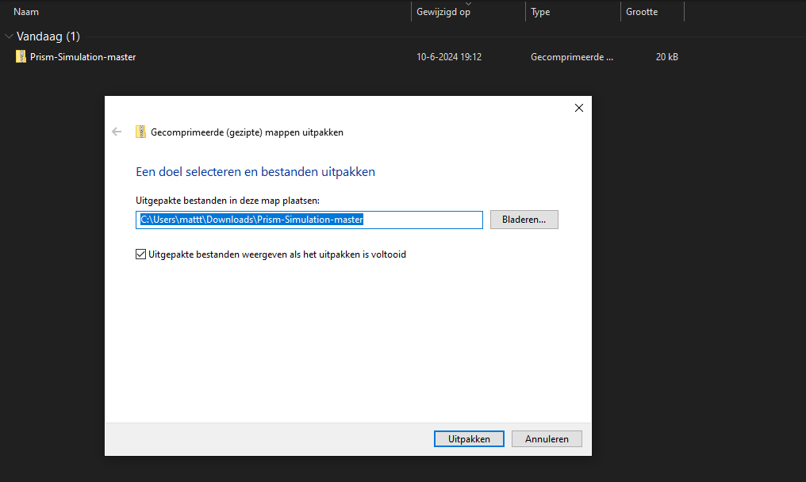
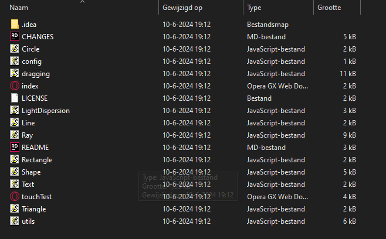

Pak het ZIP-bestand uit door met de rechtmuisknop op het bestand te klikken, dan op Alles uitpakken... te klikken en als op Uitpakken te klikken

Dubbelklik op index.html en de simulatie opent automatisch in je geselecteede browser

De simulatie gebruiken
De simulatie is heel makkelijk te gebruiken en dat gaat zo:
linkermuisknop indrukken op een vorm en slepen: sleept die vorm over het canvas
scrollen met je muis op een vorm: draait de vorm
De simulatie aanpassen (vooraf)
Je kan de simulatie ook aanpassen naar jouw eigen smaak je gaat hiervoor naar config.js in de bestanden die je in de vorige stap het gedownload dan kan je vervolgens de volgende dingen aanpassen:
showNormals
true: laat de normaal-lijnen van de simulatie zien. false: laat deze lijnen niet zien
AmountOfRays
Dit is een geheel getal dat aangeeft hoeveel lichtlijnen er getekend moeten worden, hoe meer lijnen hoe dichter bij de werkelijkheid, maar dit kost meer vermogen van je PC/Laptop
maxLightBounces
Dit is een geheel getal dat aangeeft wat de maximale hoeveelheid aan lichtbreking berekeningen er gedaan mogen worden. Dit is een maximum, de simulatie stop waneer de lichtstraal uit beeld gaat sowieso!
*mogelijke andere opties in config.js zijn niet gebruikt in de code!
De simulatie aanpassen (real-time)
Je kan de simulatie ook aanpassen tewijl hij bezig is, dit doe je door user.[showNormals | AmountOfRays | maxLightBounces] = [waarde] in te typen in de Chrome console. Deze open je door Ctrl + Shift + I op je toetsenbord in te toetsen.
Ook kan je nieuwe vormen toevoegen via de Chrome console dat gaat als volgt:
s.addShape(new Triangle(x, y, width, color));
Hierin is:
`x` een x-coordinaat
`y` een y-coordinaat
`width` een breedte
`color` een HEX kleur (zoals #ffffff voor wit)
s.addShape(new Rectangle(x, y, width, heigth, color));
`x` een x-coordinaat
`y` een y-coordinaat
`width` een breedte
`height` een hoogte
`color` een HEX kleur (zoals #ffffff voor wit)
s.addShape(new Line(x, y, angle, length, width, color));